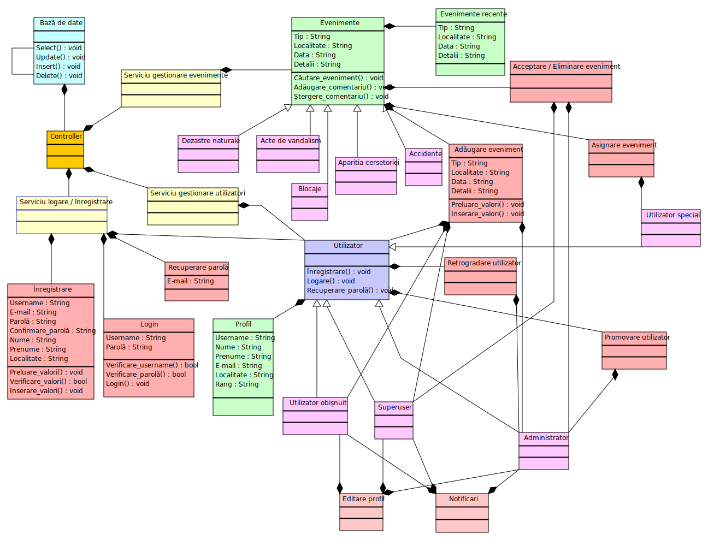

1.1. CityZen - descriere
Proiectul presupune crearea unei aplicații Web dedicate activităților/evenimentelor petrecute într-un anumit oraș (evenimente precum accidente, vandalizări, indicatoare care lipsesc, dezastre naturale, avertismente importante, zone din oraș în care circulația a fost oprită, zone aflate momentan în construcție etc.)
Aplicația va beneficia de o structură de autentificare/logare pentru utilizatori, iar aceștia vor fi capabili să actualizeze baza de date cu noi evenimente, noi detalii despre evenimente etc. Pe lângă utilizatorii obișnuiți, aplicația va stoca și un superuser. Acesta este singurul utilizator care poate "promova" statutul oricărui utilizator de la normal la privilegiat / special (sau invers). Un utilizator special, este, în general, un membru al unei instituții publice din oraș (membru al departamentului de poliție, pompieri, medical, transport public, judecătorie etc.), iar evenimentele etichetate cu un atribut reprezentând instituția la care utilizatorul respectiv aderă în prezent vor putea fi "assigned" de către acesta. Un eveniment marcat drept "assigned" semnifică faptul că un utilizator privilegiat lucrând în domeniul descris de eveniment a luat la cunoștință faptele descrise și a început sau va începe să acționeze în vederea remedierii acestora.
1.2. Utilizatori - privilegii
Utilizatorii nelogați vor beneficia de următoarele privilegii:
- vizualizare evenimente postate;
- vizualizare detalii și rating-ul pentru evenimentele postate;
- filtrare și sortare a evenimentelor cu scopul de a ușura găsirea noutăților dorite;
Utilizatorii logați beneficiază de toate privilegiile utilizatorilor nelogați, la care se mai adaugă:
- adăugare de evenimente;
- adăugare de like la evenimentele postate;
- editarea propriului profil;
Superuserii beneficiază de toate privilegiile postate mai sus, la care se adaugă:
- Acceptarea / respingerea unor anunturi inainte ca acestea sa fie postate;
Administratorii beneficiază de toate privilegiile. Acestea includ toate cele de mai sus, incluzând de asemenea și:
- promovarea / retrogradarea unui utilizator;
1.3. Structura aplicației Web
Vor fi implementate minim 4 pagini Web:
- pagina principală, ce va oferi utilizatorului redirecționări către celelalte pagini Web ale aplicației;
- o pagină care afișează evenimentele petrecute în oraș. Utilizatorul va putea filtra tipul de conținut afișat de aplicația Web: zona din care îi sunt afișate evenimentele, data la care s-au petrecut (crescator,descrescator) etc. De asemenea, aplicația va implementa un sistem de notificări de tip pop-up;
- o pagină accesibilă doar de către superuser si administrator, în care acestia pot sa accepte si sa posteze un eveniment, sau sa il stearga definitiv din baza de date. Acest lucru va fi trimis catre utilizatorul care a adaugat anuntul in cauza ca si notificare ( "Anuntul din categoria x a fost postat/sters");
- o pagina accesibila doar adminului , in care acesta poate promova userii simpli la grad de superuser sau chiar admin, ori poate sterge un anumit cont. De asemenea, din paginile in care se afla anunturi,doar adminul poate descarca un "sumar" al acestora in format JSON.
- o pagină de logare / autentificare.
- o pagină de register.
- o pagină de recuperare parola.
- o pagină adaugare anunt.

3.1. Module funcționale (poți să adaugi la fiecare element din listă un hyperlink către fișierul .php corespunzător?)
- Login / Sign Up / Recuperare parolă
- Vizualizare / Editare profil
- Adaugare anunț
- Postare / ștergere anunț
- Like (rating) anunț
- Filtrare anunțuri
- Administrare utilizatori
- Modul de notificări
3.2. API
- MYSQL pentru conectare la baza de date
3.3. Tehnologii folosite
- Serverul Apache
- Partea de BackEnd este creata cu PHP
- Baze de date pentru toate datele site-ului
- Serverul Apache
- Interfata este creata folosind HTML, CSS si JAVASCRIPT.